Eleven million cattle. A billion dollars of beef a year.
That is the Grow Zambia cattle goal for 2031. Exports do not buy a herd count. They buy proof, animal by animal: where it was born, what it ate, what it was treated with, where it has been, and that it was never where disease was.
This demo shows how that proof gets made, from one herd near Pemba to a carcass in Choma, and what it unlocks on the way.
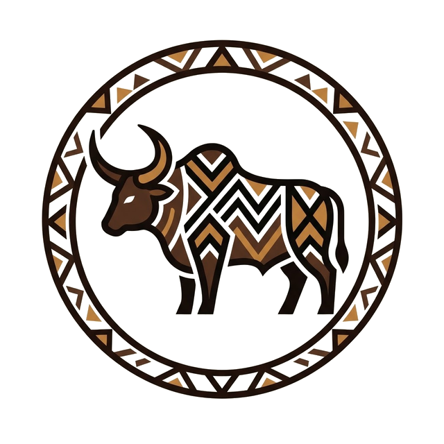
What would be needed: the spec sheet, with the open questions and the options · PDF · The concept note (PDF), to print and hand over
One animal, one record
The approach is quality data on the individual animal, kept from birth to carcass. Not a district count. Five things, every time, the same way.
- Picture, standard anglewhat it looks like
- Weight and conditionwhat it is worth
- Health, treatments, vaccinationswhat was done
- Movements, with dateswhere it has been
- Carcass weight and gradewhat it became
Everything an export market asks for is in that list. So is everything a farmer, a vet, a trader and a bank need. The same record serves all of them, which is why it can be kept.
The records are held by the system under terms the owner accepts at registration. The owner sees and corrects their own animals' records and has a say over who else sees them.
What it unlocks, if done right
Today one outbreak closes a whole district. With a movement record, the clean animal from the clean kraal still sells, because it can prove where it was not.
Weight and condition known before the trader arrives. What steers like this fetched nearby this month. The farmer bargains with the number in hand.
Sick reports with place and date cluster on a map days before an outbreak is declared. A vet sees the cluster; a camp officer vaccinates round it.
A recorded, vaccinated, traceable animal is an asset that can be insured and lent against. Fourteen billion kwacha of living capital in Southern Province alone, almost none of it bankable today.
When pictures are paired with weights and carcasses, selection stops being guesswork. The breeder's method, at the scale of a province.
Where it has been
Mwiinga, steer, ID ZM-SP-0417. Every movement, with a date. This is the export question answered.
The same check fails, and says why, for an animal that passed through the zone in March. The district is not blocked. The animal is.
Movements come from the dip tank, the sale pen, the feedlot gate and the abattoir, each already a place the animal passes. Illustrative map.
The herd
10 animals · all dipped this week
What was done
New calf
Born this morning to Nkuku. A photo, a name, two taps.
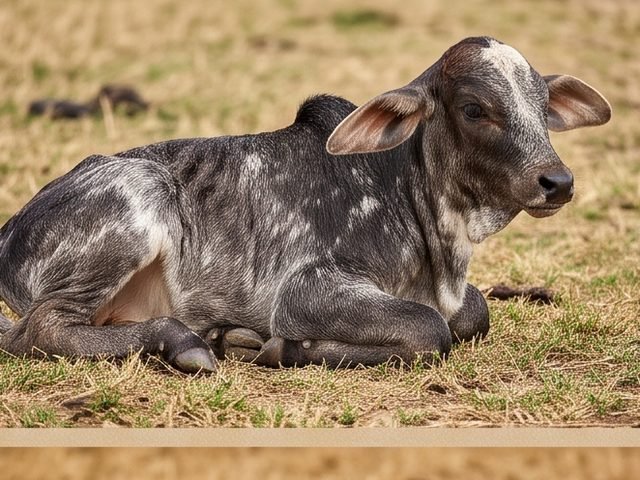
Sex
Mother
Sire
The owner usually knows which bull served his cows; the bulls come from the bull register. Where herds mix and he is not sure, the record keeps the bulls that were with the herd that season, and as the calf grows its pictures narrow it down. Every sire entry is marked known or inferred.
Born today · Pemba, in the kraal
Morning report
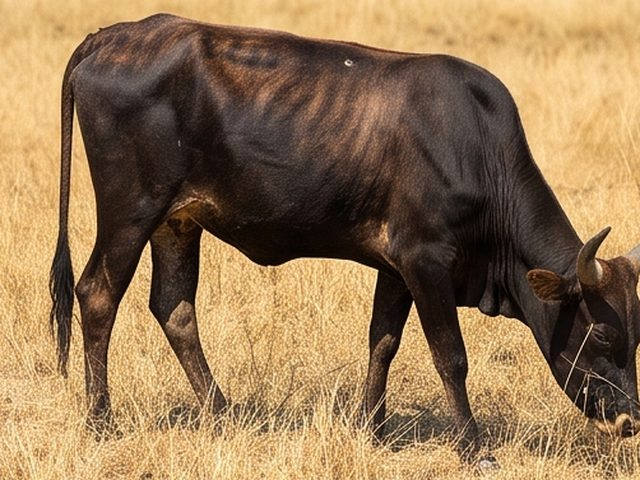
Mweemba, the herder, six o'clock. Chipego the heifer is coughing and did not eat.
What do you see?
The app never diagnoses. It sorts by urgency and sends.
The same report, on WhatsApp
The rule behind the escalation is plain: three reports with the same signs from herds using one dip tank within seven days. Who receives it is for the veterinary department to decide; today disease control sits with the district veterinary officer under the Animal Health Act, who can restrict movement. The system reads, asks once, files and forwards. It never diagnoses.
In Tonga the same chat runs in Tonga; the English is shown here until the Tonga lines are in.
The vet replies
Early warning
What the camp officer sees on Wednesday.
Same signs: cough, not eating. The camp officer books the herds around Siamundele for vaccination on Friday.
An outbreak that once killed forty animals and closed a district's markets for months stops at four.
Dip day
Siamundele dip tank, 07:00. Vaccination for the herds around the tank, by the camp officer.
After the tank, one tap for the whole herd.
Selling two steers
What steers of this class fetched within 30 km, last 30 days. Illustrative prices.
Mutinta knows what the steers are worth. She sells at the fair price, or waits two weeks for the auction. The trader knows she knows.
Prices pooled from members' own sale records and the auction list. Median, by class and weight band.
The record travels
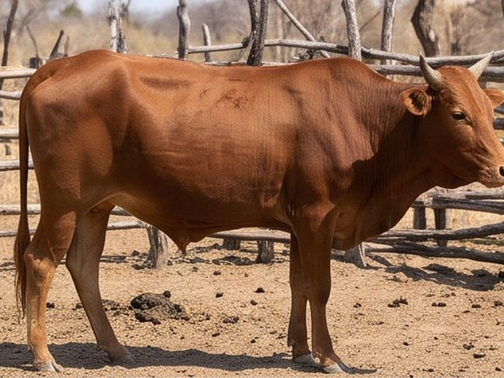
- Born here, Pemba✓
- Dipped weekly, 2024 to 2026✓
- Vaccinated, last on Friday✓
- Never in a quarantine zone✓
- Sold to the abattoir, Chomatoday
This record is what lets the abattoir sell into a market that pays for proof. The export target needs it on every animal.
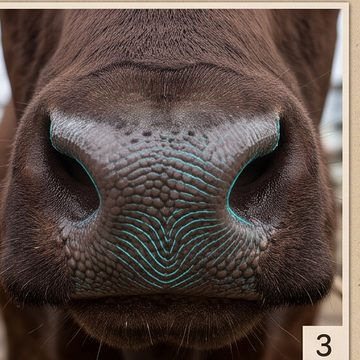
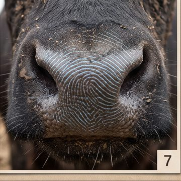
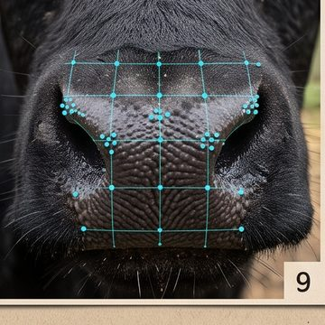
Animal identity is the goal; the tag under the 2024 Act is the proof we have. The muzzle pattern is an idea: unique like a fingerprint, independent of the coat, free per animal. Whether it can be photographed well enough by a herder at a dip tank, in dust, sun and movement, nobody has shown yet.
So it is not promised here. It is tested first: pictures of the same animals in different settings and light, by different people, and a check whether day two matches day one. Feasible, and at what cost in time, or not. Until then: tag, photo, and a person who confirms.
Breeding, from the record
After a year of calves, weanings and losses, the record answers questions nobody could answer from memory: which cows deliver, which bulls' calves grow, which lines to keep.
Cows
- Nkukucalf 2026 · weaned 7 mo · 142 kg
- Choolwecalf 2025 · lost at 2 months
- Luumuno flagno calf since 2024
- Siamoongacalf 2026 · difficult birth · vet
A cow with no calf in two seasons, a calf lost, a difficult birth: each is one entry at the time, and together they show which mothers carry the herd and which cost it. The owner decides; the record shows.
Bulls, by their calves
Weaning weight and survival by sire. Two seasons of this, and the owner knows which bull to keep and which to sell, from outcomes, not from looks.
Breeding score, worst first
| Animal | Score | What pulls it down, or up |
|---|---|---|
| Luumuno · cow | 18 | no calf 2 seasons · thin by October |
| Simoonga · bull | 34 | 2 of 4 calves weaned · light weaners |
| Choolwe · cow | 41 | calf lost 2025 · calved 2023, 2025 |
| Siakwale · ox | – | strong draught · an ox is valued, not scored for breeding |
| Nkuku · cow | 82 | calf every year · heavy weaners · held condition in the 2024 drought |
| Mulonga · bull | 88 | 5 of 6 weaned · 138 kg average · no sick report in 3 years |
The score is a sum over the record, not an opinion: calving, weaning weight and survival of offspring, condition through the dry season, sick reports, and later carcass grades of relatives. The weights are set by the breeding goal, in the open, and every animal shows why. Sort worst first and the cull list writes itself; the owner still decides.
Wanted traits, as the record can see them
- Hardiness
condition held through the dry season · calved under village conditions · no sick report in tick season - Fertility
a calf every year · calf alive at weaning - Growth
weaning weight · gain in the feedlot - Meat quality
carcass weight and grade of the animal and its relatives - Milk
calf growth to weaning · household milk entries - Draught
work days recorded · temperament
Lines: the question for the breeders
A premium line that responds to the feedlot and grades high at the hook is what a billion dollars of beef is made of. The question is what sits beside it.
Option A. One main line, dual or triple purpose, meat, milk and draught in the village herd, and a premium beef line above it, bred from the animals the record ranks highest for growth and carcass.
Option B. Separate strains from the start: predominantly meat, predominantly milk, draught, each with its own score and its own sires.
The record does not decide this; breeders and the ministry do. What the record gives them is the ranking under either goal, from outcomes, and the proof the buyer asks for.
Weaning
Weight from the crush where there is one, from the standard picture later. The weaning weight is the first outcome a sire can be judged by, long before the abattoir.
The gene pool of the province
The same record across thousands of herds shows the province which lines survive drought and disease, which grow, which calve every year, and where a weak line is spreading because it is the only bull in reach. Then the two moves become possible: bringing desirable genetics in where they are missing, through community bulls or proven sires, and taking unwanted ones out, by advice and by price, never by force. The owner decides for his herd; the province sees the pattern and acts on it.
That is the breeding goal: a better Southern Province herd, built one herd at a time, on records instead of guesses.
Southern Province, this week
Provincial Veterinary Officer's view. Week 45. Numbers illustrative; the shape is what the record produces.
Disease · open clusters
| Place | Reports | Signs | Status |
|---|---|---|---|
| Siamundele · Pemba | 3 / 6 d | cough, not eating | DVO · visit Fri |
| Simwatachela · Kalomo | 5 / 4 d | skin nodules | vaccinating |
| Nkandela · Pemba | 1 | limping | watch |
Rule: three reports, same signs, one dip tank, seven days. Each cluster carries its reports, photos and the animals' movement history. Markets around an open cluster are flagged before any sale.
Districts
| District | Cattle | Reg. | Dip | Mort. 12 m | Export |
|---|---|---|---|---|---|
| Monze | 204 k | 31% | 78% | 6.1% | 18 k |
| Kalomo | 195 k | 22% | 64% | 11.8% | 9 k |
| Namwala | 171 k | 19% | 51% | 13.4% | 4 k |
| Itezhi-tezhi | 156 k | 12% | 43% | 14.0% | 2 k |
| Choma | 138 k | 36% | 81% | 5.4% | 21 k |
| Kazungula | 135 k | 15% | 47% | 12.9% | 3 k |
| Mazabuka | 111 k | 29% | 72% | 8.2% | 12 k |
| Pemba | 58 k | 41% | 84% | 4.9% | 11 k |
| 7 more districts | 582 k | 22% | 49% | 12.6% | 16 k |
Reg.: animals with a record. Dip: registered animals dipped in the last 14 days. Mort.: deaths recorded in registered herds, twelve months. Export: animals with a complete movement history outside any restricted zone. Where registration is high, mortality is low: the record and the dip tank arrive together.
Movements and export · 7 days
| Flow | Animals | Of which blocked |
|---|---|---|
| Kraal to dip tank | 2,410 | 0 |
| To sale pens and auctions | 486 | 31 · from a cluster zone |
| To feedlots | 164 | 0 |
| To abattoirs | 60 | 0 |
| Across the district line | 212 | 9 · no permit on record |
Breeding · registered herds, 12 months
The gene-pool view: where calving is low, where weaning survival is low, where a single line dominates. Places for proven sires and community bulls; lines to advise out, by price.
Prices · median, this week
| Class | Choma | Monze | Kalomo | vs 4 wks |
|---|---|---|---|---|
| Steer, 3 y | K 9,800 | K 9,400 | K 8,900 | +3% |
| Cow, in calf | K 8,200 | K 7,900 | K 7,600 | +1% |
| Weaner | K 3,900 | K 3,700 | K 3,400 | -4% |
| Carcass, per kg CDM | K 68 | K 66 | K 63 | +2% |
This week's list
- Siamundele: vaccination Friday 07:00, 11 herds, 640 animals; vet visit Thuopen
- Simwatachela: ring vaccination, 1,900 animals, 3 days; movement stop in forceopen
- 97 dip tanks silent 14 days: camp officers to call the committeestask
- Namwala, Itezhi-tezhi: registration drives before the rainsplan
- Export audit: 96 k eligible animals, 21 k in Choma; abattoir capacity the limitnote
Counts, coverage, movements, clusters, prices. Never a farmer's money. Every number on this screen is a sum over rows the farmers, herders, vets and abattoirs wrote; none is typed here.
What we have, and what we suggest
What we have is the technology and the people who built it. Where it is tried, with whom, how large and for how long is the veterinary service's and the partners' decision. What follows is a suggestion.
- Where
wherever it is wanted: a veterinary camp, a dip tank area, a cooperative, a feedlot, an abattoir, in any combination - What
register, sick report to a vet, dip day, movement at the dip tank, the record that travels to an abattoir; the feedlot's gate-to-hook pair where there is a feedlot - How long
we suggest one place and one season, with a comparable area alongside - Who
the veterinary service, a cooperative, a feedlot or an abattoir if they want it, and us - Measured by
reports answered, and how fast · records complete at sale · herders still using it in month six · cost per animal - What a site would need
phones, a recorder, training, bundles: indicative, for the partners to price; the people are the real cost
What we ask
1. The veterinary service of Southern Province in the pilot: its camp officers record, its district officer receives the reports, its finding closes each case.
2. An interface to the national identification system, so the pilot's records sit under it from day one, never beside it.
3. A name: the officer who owns the pilot on the government side, whom we report to monthly, in Tonga and in English.
What we bring
The system, running; the training and the procedures, written with the camp; our machine and our line; the Tonga; the monthly report with the numbers, good or bad. Not for profit for as long as it is used to promote smallholder cattle farming in Southern Province, no charge to any farmer; any commercial use is discussed separately.
If the season shows that information was not the missing input, we say so, and the records stay with the camp.
The concept note (PDF): this proposal on ten pages, with the screens and a QR code to the demo
The economics, as a cattle man reads them
One smallholder herd of twelve cows, then the province, then the export sum. Government's own baseline and targets; the kwacha figures are derived from a working value of K8,000 a head, which a herd-weighted check puts at about K8,500 (oxen and cows above, calves and weaners below; the abattoir price behind it is unpublished), and are marked so.
One herd · twelve breeding cows · a year
| Today | At target | Difference | |
|---|---|---|---|
| Calving rate | 29% | 40% | +11 pts |
| Calves born | 3.5 | 4.8 | +1.3 |
| Mortality, whole herd of 30 | 12.5% | 5% | -7.5 pts |
| Animals lost | 3.8 | 1.5 | -2.3 |
| Net herd growth | -0.3 | +3.3 | +3.6 head |
| Value of the difference, derived | ~K29,000 |
At the baseline the herd stands still: the calves born barely replace the animals that die. At the target it grows by a tenth a year and the owner has animals to sell. Nothing in this table needs a feedlot or an exporter; it needs calves alive and animals not dying, which is dipping, vaccination, a vet who answers, and a bull that works.
Where the kwacha leak
- Dry-season selling: condition falls, price falls with it. 96 percent of Mazabuka farmers make that link.-20 to -40%
- The trader knows the price, the seller does not. The gap between the farm-gate price and the pooled local price.OPEN
- A death: the whole animal, at once. One point of mortality in the province is about 17,500 animals a year.~K140 m / pt
- An outbreak: forty animals and a district's markets closed for months. Prices in the closed zone fall; nothing moves.months
- No proof: an animal without a history sells as a local animal, never as an export animal.the premium
The province
The export sum
| Step | Figure | Source |
|---|---|---|
| The goal | US$1 bn / year · 11 m head | President, 9 Oct 2026 |
| At US$4 to 8 a kilogram, carcass-weight equivalent | 125,000 to 250,000 t | Zambia's 2025 exports: 971 t, US$3.79/kg frozen to the DRC; Saudi imports US$4.44 frozen, US$6.20 chilled (2024); EU about €6.35/kg carcass (Comtrade, SFDA data, EU prices) |
| At 220 kg a carcass | 0.6 to 1.1 m head a year | derived |
| Export offtake that implies, on 11 m, before domestic slaughter | 5 to 10% | derived |
| Animals with an identity today | 529,266 of 5 m | Act No. 2 of 2024, progress reported |
A million export animals a year need a million histories: born where, dipped when, moved through which zone, graded what at the hook. The feedlot and the abattoir are the last two entries; the first entries are made at the kraal and the dip tank, by the people in this demo. The herd grows to the target only if calving goes up and deaths go down first; the export sum rides on the herd sum.
Sources: ZamStats 2024 Integrated Agricultural Survey; Presidential Delivery Unit beef export page; the President's address of 9 October 2026; the Animal Identification and Traceability Act No. 2 of 2024; the Mazabuka drought-coping study. Working price and all derived figures are ours and are marked.
The idea
A picture of an animal, taken the same way every time, paired with what happened to that animal: its weight, its health, what its carcass weighed and graded. Enough pairs, and a model learns to read the picture.
- Picture, standard anglethe input
- Weight, condition, health, originthe record
- Carcass weight and gradethe outcome
That is how a breeder works: select on what you can see, check against what you get. The feedlot and the abattoir already produce the outcomes. What is missing is the standard picture and the link.
Nothing here needs a model that exists yet. Phase one collects the pairs. The models come from the pairs.
How it is built
An option we offer because it is proven in daily use and makes usage natural: people already send photos and messages on WhatsApp, and the system reads them and makes the entry. A photo and "Chipego coughing, not eating" becomes a sick report with the time, the place and the animal, and goes to the vet. Dip day is one message: "dipped all". The sender's number is the login: each number is registered to one person, so a message arrives with that person's rights and no password. Nobody has to install anything to start. If WhatsApp is not wanted, for data security for instance, the same chat becomes a dedicated app of our own: the same messages, the same entries, on servers in Zambia.
The herder writes Tonga, the line reads it. Not a big model guessing: a harness that holds the behaviour in code, a triage of what the message is (a sick report, a dip day, a sale, a question), and a small model trained here that only reads the Tonga, with a Tonga desk of teachers correcting what it gets wrong. The same design won the agriculture track of the World Bank's Small AI for Development hackathon in October 2026, an SMS cooperative for coffee farmers in Timor-Leste reading Tetum; we had built it months earlier for Yumi Milling's WhatsApp line in Batoka, where it answers staff and customers every day. Adapting it to cattle is about twenty hours of teacher input, not a new model.
The herder's phone, the vet's desk, the feedlot gate, the abattoir and the export check are different apps reading and writing the same record. Nothing is copied between systems, so nothing drifts apart.
Row-level security: an owner sees their own animals, a herder the ones in their care, a vet what the owner allows, the abattoir only the animals delivered to it. The rule sits on the data, not in the app, so no app can get round it.
Each entry carries a hash: a fingerprint of its content and of the entry before it, with the time and the person. Change an entry later and every stamp after it breaks. Enter the same picture twice and its fingerprint is already there, so the double is refused.
Records are written on the phone first and sent when there is signal. Entries are added, never overwritten, so two people recording the same animal do not undo each other.
Nothing exotic. It is the way a careful business keeps its books today, applied to cattle.
One database, six apps
Each app is small and shows one role its own rows. Tap a screen to open it. Each can also take its entries from WhatsApp or SMS where that fits better than a screen.
Sees the animals in their care. Never money.
Sees their own animals, prices and money. Sells from the record.
Sees the animals on the lot and what the owner allows of their history. Writes weights and pictures.
Sees only the animals delivered. Writes the carcass, the outcome every earlier entry points to.
Sees the cases sent to them, with history, and the clusters in their area.
Sees counts, coverage, movements and the export check. Never a farmer's money.
The spec sheet (PDF): what would be needed
Same database, different rows. The rule that decides who sees what sits on the data, so adding the seventh app does not reopen the first six.
Local AI can do wonders. On quality data.
The models in this demo are not bought; they are grown here, on Zambian animals, on our own machine, and they belong to the people whose records trained them. Our Tonga translator was made that way, from printed books and paid speakers, for a few hundred dollars. The same method reads a muzzle, estimates a weight, spots a cluster. It works to the exact degree that the data are good.
What quality means, entry by entry
| Entry | Good means |
|---|---|
| Standard picture | head restrained · same angle and distance · shade, no flash · the sharpest of a burst · rejected and retaken on the spot |
| Weight | a calibrated scale · same time of day · the picture taken at the same moment, or the pair is worthless |
| Identity | tag read by the phone · a person who confirms · the muzzle only if the test shows it works |
| Health | signs from a fixed list, with the photo · the vet's finding closes the case · confirmed cases become training data, suspicions do not |
| Events | at the time, by the person who saw it · time and place from the phone · one tap, no typing |
| Carcass | weight and grade by a trained inspector · linked to the tag at the lairage, before the hide comes off |
How to get it: not yet clear, and that is the first work
- Procedures: one page per entry, a guide on the screen, a quality check on the phone that refuses a bad entry before it is saved
- Training: meat inspectors, dip-tank recorders, camp officers and herders, trained on the procedure, tested, retrained; paid per entry that passes verification, as our Tonga desk pays per line
- Tests: a second recorder on a sample of entries, agreement measured; a phase-zero trial of fifty animals, three photos each on two days, before any model is trained
- The loop: the model's errors go back to the recorders as training, every month; the data get better because the model shows where they are bad
None of these procedures exists yet for Zambian cattle. They have to be written, tried at one dip tank and one abattoir, and changed by what breaks. That is cheaper than any camera and worth more than any model: the model comes free once the data are right.
Phase 1 · At the feedlot gate
Every animal that arrives passes the crush pen. One person, one phone, three minutes.
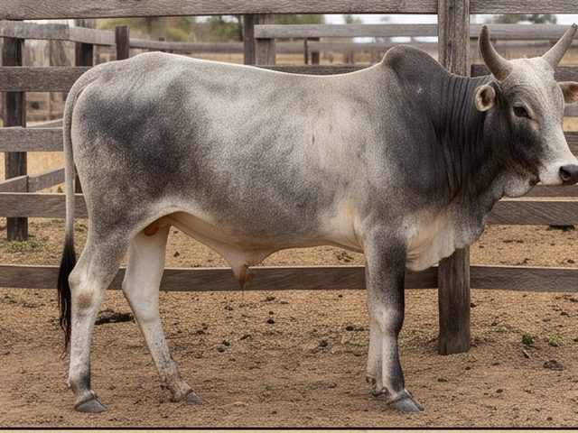
In the crush: same place, same angle, every animal.
Standard pictures
Weight at arrival
Condition
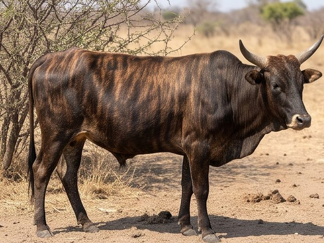
Age, if known
Where from
Health at the gate
Phase 1 · During the stay
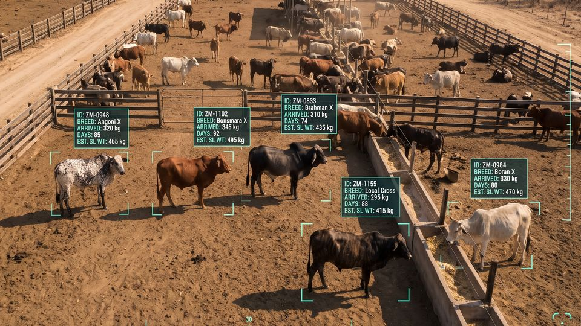
What the feedlot camera view becomes once the models exist: each animal recognised, its estimated weight beside it. An illustration of the goal, not a screenshot.
A fixed camera over the feed bunk and one over the crush. The same animal, the same angle, every day for ninety days. Weighed at the crush every two weeks.
Illustrative. Four of ninety pictures, with the scale readings they pair with. Real pictures go here.
The pairs are the product of this phase: picture and weight, picture and condition, day after day. Feed rations and treatments go into the same record.
Phase 1 · At the abattoir
A camera at the lairage, the same standard angle. Then the carcass data the abattoir already records.
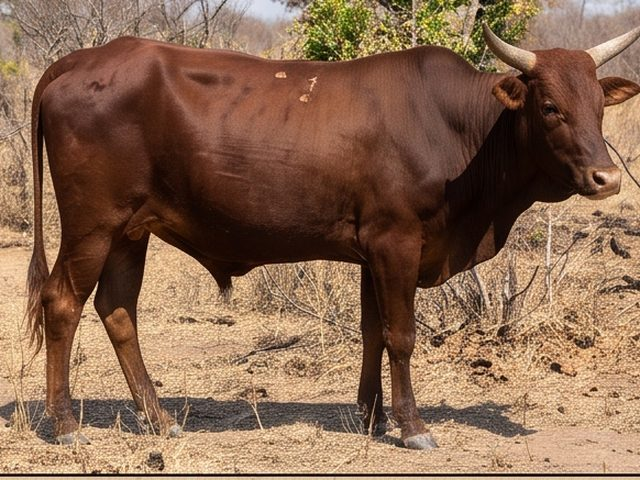
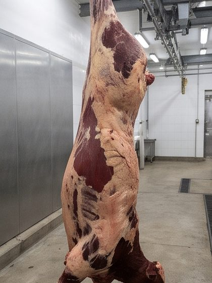
ZM-FL-0088: at the gate on day one, on the hook on day ninety. The picture now has its answer.
- Live weight at exit404 kg
- Carcass weight, cold218 kg
- Dressing54%
- Grade and fat classA2
- Condemnednone
Ninety pictures, seven weights, one carcass. From a thousand animals: weight and condition from a photo at the gate, and a carcass estimate from the live animal. Checked against the scale before anyone relies on it.
The pair the model learns from
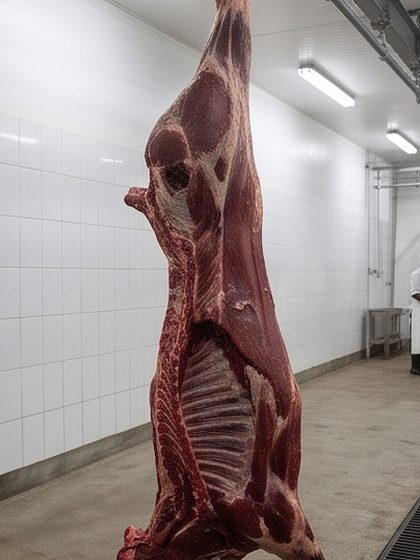
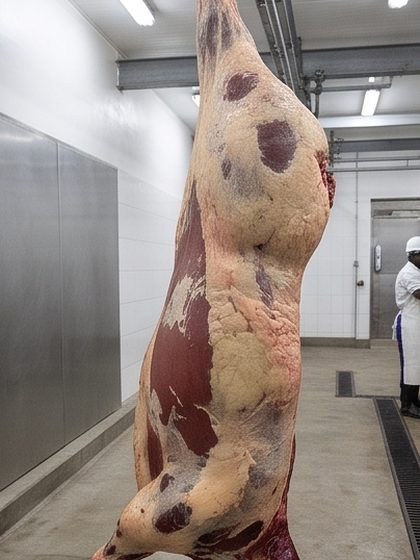
Illustrative numbers and pictures. The dressing percentage and grades are the abattoir's own.
Phases 2 and 3
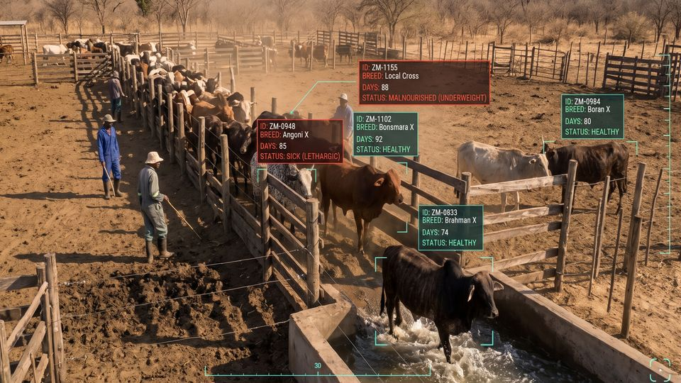
The dip tank camera. Every animal that passes the race is recognised and recorded, with the dip and the vaccination against its name. The dip tank becomes the village's data point.
The same standard picture at the auction and at the dip tank. Paired with sale prices and with health events. The weight-from-a-photo model, now checked, lets a farmer see an estimate before the trader names a figure.
What the first part of this demo showed. Owners, herders, a vet in the loop, early warning, the record that travels. Built on the records and models the first two phases produced.
Each phase pays for the next with what it learns. None of them needs the one after it to be useful.
What could be done first
- One feedlot and one abattoir that agree to take partpartners
- Two fixed cameras, a phone at the crush, the scale that is already therekit
- One person at intake, trained in an afternoonpeople
- The intake form, the record, the carcass linksoftware, this
- One feedlot cycle, about ninety days, then the first model checktime
The first cycle produces nothing a farmer sees. It produces the pairs. The second cycle produces the first number anyone can check against a scale. That is the gate to everything after.
The animal identification law and the export roadmap both ask for exactly these records.
Where the value is
Not everything on these screens is worth building first. The order below follows the money and the losses, not the pictures.
The largest prize: each point of mortality in Southern Province is about 17,500 animals a year. Needs sick reports with place and date reaching a vet, and vaccination as a list of animals. Open: if vaccines, dip chemicals or vets are the shortage, information moves nothing. Option: start with the camp officer's reports, not the herder's phone.
The law for identification exists and has reached a tenth of its target. Needs tags issued and a movement record written at the dip tank, the sale pen and the gate. Open: who runs the mandated system, and whether a second tool is welcome. Option: build the record layer under that system, never beside it.
Needs pooled sale records by class and weight band. Open: whether sellers will share what they got. Option: start from auction lists, which are public, and add members' sales later.
Needs the record first, then a lender or insurer willing to act on it. Open: nobody has yet paid for this. Option: a cooperative lending against its own members' recorded animals, before any bank.
The part that looks best and is worth least today. It needs the gate-to-hook pairs of phase one before it exists at all. Open: accuracy in a Zambian crush pen. Not first.
What must be built, and nothing more
The intake form. The record store with its row rules and stamps. The sick report to a vet and the vet's reply. The movement entry at the dip tank. That is the whole first build. Muzzle identification, camera views and breeding models wait for the pairs.
The questions that decide it
- Who pays after the pilot: government, buyers, lenders, insurers, or the farmers
- Will herders keep using it without being chased. Use is the only verdict
- Does the veterinary department want herders' reports, or would they burden it
- Is information the missing link, or vaccines, dip and vets
- WhatsApp as the front door, or an app; the camp officer first, or the herder
The value is where a record changes what someone does: a vet who comes, a buyer who pays for proof, an outbreak that stops at four. Build there first.
What would be needed, from what runs today to what must be researched, with the open questions and the options.